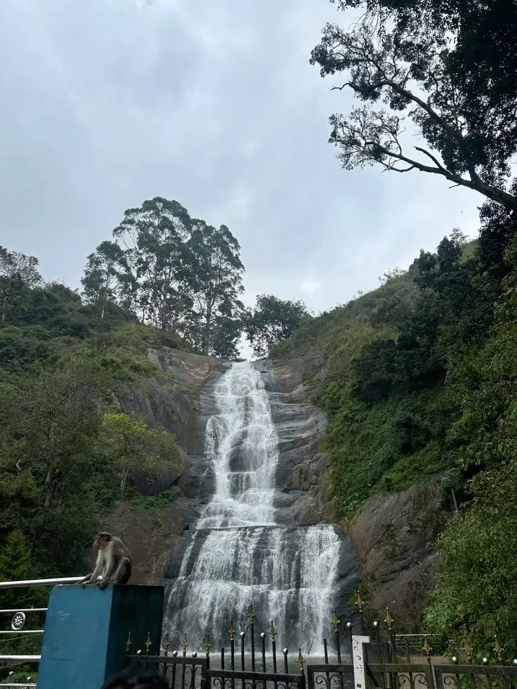
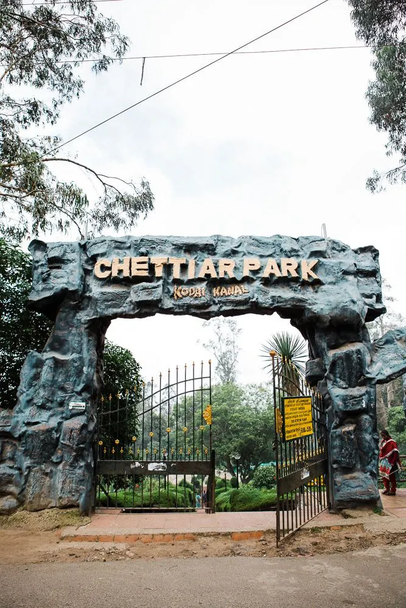

Lake
LakeKodaikanal Lake
A star-shaped man-made lake, ideal for boating, cycling and leisurely strolls around its scenic perimeter.
Lakes, viewpoints, waterfalls and gardens in the Dindigul hills of Tamil Nadu. Here are the ten spots most visitors plan around, and what to do while you are there.
See top placesKodaikanal is known for its landscapes and pleasant climate, and it suits nature lovers, adventure seekers and anyone who wants recreation, nature walks or photography. Cottages Kodaikanal is a trusted local operator that helps visitors see all the famous tourist attractions, from a single day out to a full multi-day plan.
Ten attractions that cover the lake, the viewpoints, the falls and the gardens.
LakeA star-shaped man-made lake, ideal for boating, cycling and leisurely strolls around its scenic perimeter.
 Viewpoint
ViewpointA scenic pathway with stunning views of the mountains and valleys, especially beautiful at sunrise and sunset.
A popular viewpoint with breathtaking panoramic views of the hills and valleys.
 Lake
LakeA serene, less-crowded lake that is ideal for picnics and nature walks. Entry needs a forest permit.
Also known as Fairy Falls, perfect for picnics and photography amid lush surroundings.

WaterfallA stunning waterfall on the way up to Kodaikanal, known for its beauty and refreshing water.
 Garden
GardenA botanical garden with a vast collection of flowers and plants, offering a peaceful ambience.
A place for astronomy enthusiasts, with insights into solar studies and panoramic views.

ParkA well-maintained park that is ideal for family outings and easy walks.
 Adventure
AdventureAlso known as Devil’s Kitchen, a mysterious and adventurous exploration experience.
Fifteen ways to fill your days, from slow lakeside mornings to forest treks.
Mix a lakeside morning, a viewpoint at sunset and a forest trek, and you have covered the best of the hills.

Our packages blend nature, adventure and relaxation, and typically run 2 to 4 days.
Kodai Lake, Pambar Falls and Coaker’s Walk, plus trekking, boating and cycling, with stops at local markets for handicrafts and homemade chocolates.
Many packages bundle comfortable accommodation, transport and visits to viewpoints for a hassle-free trip.
Some add an eco-tour at Berijam Lake or a visit to the Solar Observatory, to learn about the flora and fauna of this hill station.
Our cottages sit near Kodaikanal Lake, so the lake, Coaker’s Walk and the park are all within easy reach.